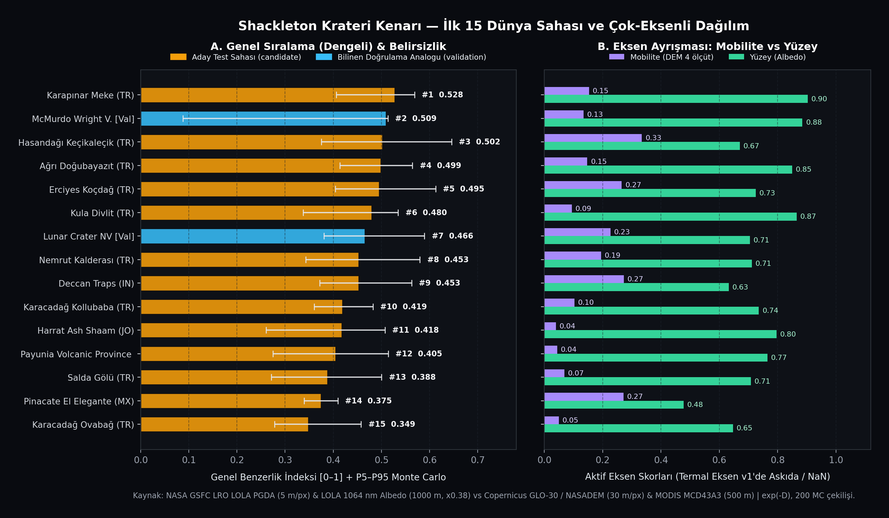

Tek Bir Dünya Sahası Ay'ın Tüm Koşullarını Karşılayamaz: Çok-Eksenli Analog Seçimi ve Fiziksel Sınırlar
Bu rapor, NASA GSFC PGDA 5 m/px LRO LOLA DEM ve 1000 m albedo verisiyle ölçülen 5 Ay Güney Kutbu bölgesini, ESA Copernicus / NASADEM (30 m) ve MODIS (500 m) ürünleriyle ölçülen 40 Dünya sahasıyla (10 bilinen doğrulama sahası + 14 Türkiye adayı + 16 küresel aday) Mobilite ve Yüzey eksenlerinde ayrı ayrı karşılaştırır. Ay ile Dünya arasındaki günlük sıcaklık döngüsü uyuşmazlığı nedeniyle Termal eksen v1'de bilinçli olarak askıdadır; belirsizlikler 200 Monte Carlo çekilişiyle (P5–P95) taşınır.
1. Canlı Ay Bölgesi × Görev Profili Keşif Paneli
Ay referansını ve görev profilini değiştirin; skorlar, P5–P95 belirsizlik aralıkları ve grafik anında güncellenir. Bir satıra tıklayarak saha künyesini açabilirsiniz.
| Genel # | Dünya Sahası | Rol | Skor (P5–P95) | Mobilite (#) | Yüzey (#) | Eğim / Rölyef / Albedo | Litoloji |
|---|
2. Çok-Eksenli Nicel Bulgular ve Yörünge Kanıt Galerisi
Tüm figürler doğrudan data/processed/features_moon.parquet ve features_earth.parquet üzerinden üretilmiştir. Büyütmek için herhangi bir görsele tıklayın.

Dengeli profilde Karapınar Meke (0.528, Yüzey #1 = 0.903) ilk sırada yer alırken, Hasandağı Keçikaleçik (0.502) zorlu Shackleton eğimine (18.50°) karşı Mobilite #1 (0.335) performansıyla ayrışır. McMurdo (0.509) yüksek albedo belirsizliği (albedo_sd = 0.0961) nedeniyle geniş bir P5–P95 [0.088–0.513] aralığı taşır.

Rover Hareket modunda Mobilite ağırlığı 2× olduğunda Hasandağı #3 → #1 yükselir; Etna Cisternazza #26 → #17 tırmanır (Mobilite #3/40). Radar modunda Yüzey odaklı Meke/Ağrı/Kula öne geçer.

Tek "evrensel Dünya analogu" yoktur: dik Shackleton'da Hasandağı/Karapınar, Bağlantı Sırtı'nda Puna/McMurdo, yatık Faustini'de (5.20°) Salda (0.847), Karacadağ Kollubaba (0.761) ve Svalbard (0.749) öne çıkar.

Sol panelde Etna (22.74°, alb 0.047) eğimde Shackleton'a (18.50°) yaklaşırken parlaklıkta (0.147) koyu Mare albedosu nedeniyle ayrışır; düz Mars sahaları (Atacama 2.65°, Haughton 3.51°) sol kenardadır.

Uygulamadaki harita ve görsel panel internete bağlı değildir: 5 m/px NASA LRO LOLA PGDA kabartma/eğim tehlike haritaları ile 10 m/px %0 bulutlu Sentinel-2 L2A görüntüleri yerelden sunulur.
3. Betimsel Sıra Tanısı ve Türkiye Adaylarının Bilimsel Konumu
- Bağımsız holdout değildir: Tüm 40 saha Z-ölçeklemesine katılır; skorlayıcı role etiketini görmeden sıralar ve ön-kayıtlı DOI beklentileriyle (validation_expectations.md) kıyaslar.
- Eğim Rejimi Farkı: Atacama (2.65°) ve Haughton (3.51°) düz Mars/Arktik analoglarıdır; 18.50° Shackleton'da Mobilite #28/#27 iken, 5.20° Faustini Kenarı seçildiğinde Mobilite ekseninde Svalbard #3 (0.759) *(genel #3, 0.749)*, Mauna Loa #5 (0.733), Haughton #6 (0.727) ve Atacama #8 (0.723) sırasına çıkar.
- Mare vs Highland Albedosu: Etna (0.047), Mauna Loa (0.030) ve Lanzarote (0.063) koyu Ay denizi albedosuna yakındır; 0.147 parlaklığındaki kutup regolitiyle Yüzey ekseninde ayrışması yöntemin hatası değil, fiziksel gerçeğidir.
- Karapınar Meke (#1 Shackleton, 0.528): 0.141 albedo (Yüzey #1 = 0.903) ile üst sıraya çıkar; volkanik maar/skorya literatürüne sahiptir.
- Hasandağı Keçikaleçik (#3 Genel 0.502 · Mobilite #1 = 0.335): 15.56° ortalama eğim, 30.42° p90 eğim ve 448.6 m rölyefiyle Rover Hareket testinde 40 saha arasında #1'dir.
- Karacadağ Kollubaba (Shackleton #10, Faustini #2 = 0.761): Az çalışılmış bir volkanik plato olarak "doğrulanmış Ay analogu" değil, saha/laboratuvar doğrulaması bekleyen bir test adayıdır.
- Karışık Piksel Notu (MIXED_*): Salda Gölü (evaporite, Faustini #1) ve Süphan Güney Eteği Dünya WorldCover/Sentinel-2 denetiminde MIXED_CROP+VEG içerir; sayısal yakınlık saha/litoloji doğrulaması olmadan analog ilanı anlamına gelmez.
4. 8 Boyutlu Analoji Kapsam ve Fiziksel Sınırlar Çerçevesi
Uygulamadaki Analojinin Sınırları sekmesinin özeti: Dünya sahaları yalnızca ilk iki eksendeki geometrik/yüzey testleri için vekil adaydır.
5. Veri Kaynakları ve Tam Akademik Kaynakça (Emirhan & Eray)
Tüm NASA/ESA uydu ürünleri, Emirhan'ın Ay makaleleri, Eray'ın 10 doğrulama DOI'si ve 40 saha koordinat künyesi (docs/data_sources.md).
| Saha ID / Adı | Rol | Koordinat & DEM / Albedo | Akademik / Jeolojik Kaynak (Eray · VERIFIED_EARTH_SITES & DOI) |
|---|